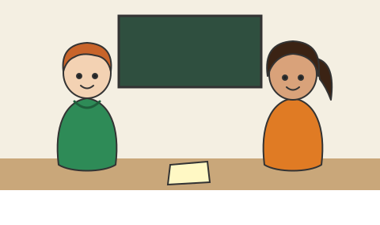

Information und Daten
Mit einem KI-Tutor lernen
Ein KI-Tutor erklärt dir diese Seite und hilft dir bei den Aufgaben. Wähl deinen Assistenten:
Mit Claude öffnen Mit ChatGPT öffnen Mit Mistral Vibe öffnen
Du nutzt dein eigenes Konto beim Anbieter. Der Assistent ist kein Angebot von lernapps.net: lernapps liefert nur Inhalte und Aufgaben. Die Wahl gilt für alle Seiten, nur auf diesem Gerät.
Ein Zettel auf dem Boden
Jona, Selin und Mia sind 11 Jahre alt und gehen in die Klasse 6b. Jona findet im Klassenzimmer einen Zettel auf dem Boden. Darauf stehen nur ein paar Zeichen. Jona dreht den Zettel hin und her. Was soll das bedeuten?
Auf dieser Seite lernst du, was Daten sind und wann aus ihnen eine Information wird.

© CC-BY-4.0Jona und Selin im Klassenzimmer der 6b
 © CC-BY-4.0
© CC-BY-4.0Der Zettel, den Jona gefunden hat
Aufgabe
Lösung
Richtige Antwort: Die Aussage stimmt nicht.
Ohne Zusammenhang kann „8:00“ eine Uhrzeit oder ein Spielstand sein, und „6b“ eine Klasse oder ein Platz im Kino.
Daten brauchen einen Zusammenhang
Selin sieht den Zettel und lacht: „Das ist von Frau Berg, unserer Klassenlehrerin! Am Montag, 11. Mai, fahren wir zur Jugendherberge am Seeberg. Wir treffen uns um 8 Uhr am Bahnhof, da, wo der Zug fährt.“ Selin kennt den Zusammenhang: Frau Berg plant die Klassenfahrt der 6b. Darum versteht sie den Zettel.
- Daten
Daten sind Zeichen, die nach festen Regeln aufgeschrieben sind, zum Beispiel Zahlen, Wörter oder ein Datum. So kann man sie speichern und weitergeben.
- Information
Eine Information ist die Bedeutung, die jemand aus Daten versteht, weil er den Zusammenhang kennt.
Merke
Frau Berg hatte eine Information im Kopf. Sie hat sie als Daten aufgeschrieben. Selin liest die Daten und deutet sie. So wird aus den Daten wieder eine Information. Jona fehlte der Zusammenhang: Für ihn waren es nur Daten.
Übung
Aufgabe
Lösung
Richtige Antwort: 1. Frau Berg weiß, wann und wo sich die 6b trifft., 2. Frau Berg schreibt die Daten auf einen Zettel., 3. Selin liest den Zettel., 4. Selin versteht, dass sich die 6b am Montag um 8 Uhr am Bahnhof trifft.
Erst ist die Information in Frau Bergs Kopf, dann wird sie zu Daten auf dem Zettel. Beim Lesen und Deuten wird sie bei Selin wieder zur Information.
Aufgabe
Lösung
Richtige Antwort: 4
Auf dem Zettel stehen 4 Angaben: die Klasse, das Datum, die Uhrzeit und der Zug für den Ort.
Aufgabe
Lösung
Die 6b trifft sich am 11. Mai um 8 Uhr am Bahnhof. richtige Antwort
So deutet Selin die Daten, weil sie weiß, dass Frau Berg die Klassenfahrt plant.
6b · 11.5. · 8:00 und ein Zug
Das sind die Daten, so wie sie auf dem Zettel stehen. Die Information ist ihre Bedeutung.
Ein Zug fährt um 8 Uhr ab.
Davon steht nichts auf dem Zettel. Die 6b trifft sich nur am Bahnhof.
Die Information ist das, was die Daten im Zusammenhang der Klassenfahrt bedeuten.
Aufgabe
Lösung
Richtige Antwort: Auf dem Zettel steht „8:00“. – Daten, noch ohne Bedeutung; Selin weiß, dass sie um 8 Uhr am Bahnhof sein muss. – Information, aus den Daten verstanden
Zeichen auf dem Zettel sind Daten. Was Selin daraus versteht, ist eine Information.
Jetzt kannst du Daten und Information unterscheiden. Auf der nächsten Seite siehst du, dass dieselbe Zahl je nach Zusammenhang ganz verschiedene Dinge bedeuten kann.
Fehler gefunden oder eine Idee für diese App?